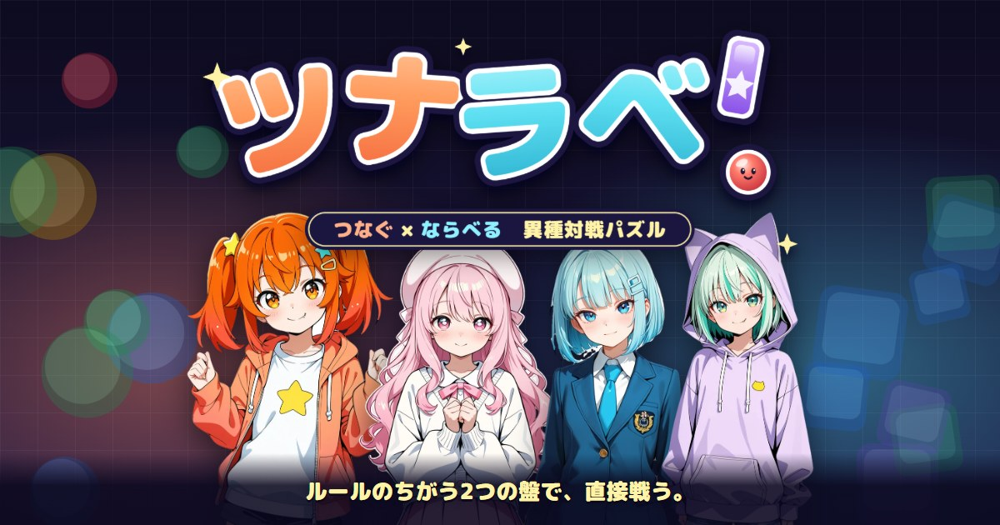

About — ツナラベ！
ツナラベ！は、ブラウザで遊べる対戦パズルです。 上から落ちてくる2個1組を積んで同じ色を4つつなげるつなぐ派（ぷよぷよ風）と、 下からせり上がる盤でパネルを入れ替えて3つ並べるならべる派（パネルでポン風）が、ルールのちがう盤のまま直接戦います。 無料で、登録もインストールもいりません。CPU 戦は PC とスマホで、ふたり対戦は1台の PC で遊べます。

ふつうの対戦パズルは、両方の人が同じルールの盤で戦います。ツナラベ！では、落ち物の盤と入れ替えパズルの盤が向かい合います。 どちらの派も、消すと共通の「ダメージ値」が出ます。ダメージは相手の盤の流儀に変換されて降るので、つなぐ派にはおじゃまのつぶ、ならべる派には横長のおじゃまブロックが落ちます。 先に盤が積み上がった方の負けです。
上から落ちてくる2個1組を積み、同じ色を4つつなげて消します。消えたあとに落ちたつぶがまたそろうと連鎖になり、大きな連鎖ほど相手に多くのおじゃまを送れます。 おじゃまのつぶは、隣で消すと消えます。
下からせり上がる盤で、横2マスのカーソルでパネルを入れ替え、縦か横に3つ以上並べて消します。同時に4つ以上消すと同時消し、落ちたパネルがそろうと連鎖になります。 消えたあと上のパネルは少しのあいだ浮くので、その下にパネルを差し込んで連鎖をつなぐ「アクティブ連鎖」もできます。 盤が天井に届いても3秒の猶予があり、同時消しや連鎖でせり上がりを止める「停止時間」がもらえます。おじゃまブロックは、隣で消すと下の1行がパネルに戻ります。
開始60秒は攻撃が弱めで、90秒を過ぎると15秒ごとに攻撃が強くなります。長引くほど、一度の連鎖で決着がつきやすくなります。
| かんたん | はじめての人に。ゆっくり考える CPU |
|---|---|
| やさしい | ルールに慣れてきたら |
| ふつう | 連鎖が組めるようになったら |
| つよい | 上級者向け。連鎖でしっかり攻めてくる |
| おに | 腕に自信のある人に |
変換の比率や CPU の強さは勘で決めていません。人の腕前を「初心者・ふつうの人・上手な人」の3段階に模したプレイヤー（手の速さ・反応の遅れ・読みの深さを人並みに合わせたもの）を作り、 各段の CPU と両方の派で数百試合ずつ自動で対戦させて調整しました。目安は、かんたんは初心者が6割ほど勝てる、やさしいはふつうの人が6割、ふつうは4〜5割、つよいは上手な人が4割、おには2割です。 そのため CPU の速さや攻撃の強さは、段と派によって少しずつ変えています（人が操作する側には補正はかかりません）。
つなぐ派：AD（←→）移動・S 速く落とす・W すぐ落とす・F/G（Z/X）回転
ならべる派：WASD（矢印）カーソル・F（Z）入れ替え・G（X）押している間せり上げ
ふたりで対戦：左は WASD＋FG、右は矢印＋;'
キーの割り当て・連続移動の速さは「操作の設定」で変えられます。ゲームパッドも使えます。
つなぐ派：盤の上で指を横にすべらせて移動、タップで回転（左半分は左回転）、下へはじいてすぐ落とす（画面下のボタンも使えます）。
ならべる派：パネルを左右になぞって入れ替え、下のボタンを押している間せり上げ。
はじめての人は、メニューの「あそびかた」から。操作しながら1分ほどで覚えられます。